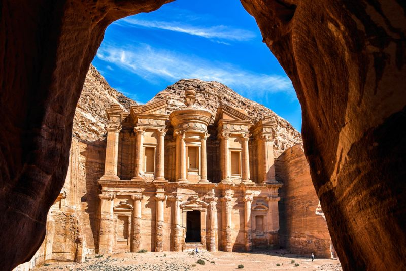
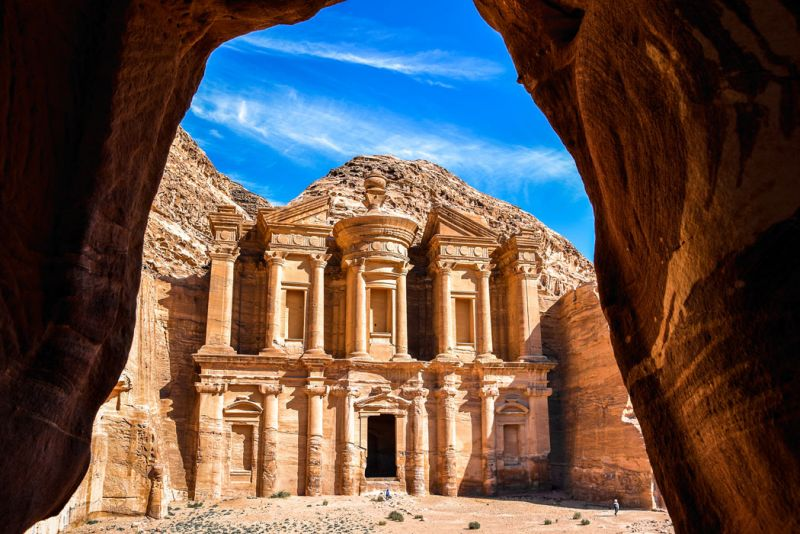

The New 7 Wonders of the World is a contemporary list of seven exceptional structures selected through a global poll orchestrated by the New7Wonders Foundation. This initiative was initiated by Swiss-born Canadian filmmaker and
author Bernard Weber in the year 2000, with the objective of recognizing and celebrating human ingenuity, cultural heritage, and architectural marvels. The campaign invited people from all over the world to participate in voting for their
favorite landmarks, emphasizing the universal appeal and significance of these sites. The voting process culminated on July 7, 2007, in a grand ceremony held in Lisbon, Portugal. From an initial pool of over 200 nominated sites, 21
finalists were shortlisted, and eventually, the seven wonders were chosen based on the highest number of votes received. These seven wonders span different continents and historical periods, reflecting diverse cultural achievements and
architectural brilliance. The selected wonders are the Great Wall of China, Petra in Jordan, Christ the Redeemer in Brazil, Machu Picchu in Peru, Chichen Itza in Mexico, the Roman Colosseum in Italy, and the Taj Mahal in India. Each of
these sites stands as a testament to human creativity, resilience, and the ability to create enduring legacies that continue to inspire and awe millions of visitors worldwide.
Great Wall of China (China)
The Great Wall of China, an ancient defensive architecture, stretches over 13,000 miles across northern China. Originally conceived by
Emperor Qin Shi Huang in the 3rd century BCE, its construction spanned several dynasties, notably the Ming Dynasty. The wall was built to
protect against invasions from nomadic tribes and features walls, watchtowers, and fortresses. It stands as a testament to Chinese engineering
and military strategy, symbolizing strength and perseverance.
Petra (Jordan)
Petra, an archaeological city in southern Jordan, was the capital of the Nabataean Kingdom in the 4th century BCE. Carved into vibrant red,
white, and pink sandstone cliffs, Petra is renowned for its rock-cut architecture and water conduit system. The city's most iconic structure is
Al-Khazneh (The Treasury), a stunning temple with a grand Hellenistic facade. Petra was a significant trading hub, connecting the silk and
spice routes of Asia with the Mediterranean. Its abandonment and rediscovery in the early 19th century by Swiss explorer Johann Ludwig
Burckhardt reignited global interest in its historical and architectural significance.
Christ the Redeemer (Brazil)
The Christ the Redeemer statue stands atop the Corcovado Mountain in Rio de Janeiro, Brazil. Completed in 1931, this 98-foot-tall statue of
Jesus Christ, with its outstretched arms spanning 92 feet, overlooks the city. Designed by Brazilian engineer Heitor da Silva Costa and French
sculptor Paul Landowski, the statue is made of reinforced concrete and soapstone. It is a symbol of Christianity and a cultural icon of Brazil,
representing peace and welcoming visitors with open arms.
Machu Picchu (Peru)
Machu Picchu, an Incan citadel set high in the Andes Mountains in Peru, was built in the 15th century under the reign of Emperor Pachacuti.
Rediscovered by American historian Hiram Bingham in 1911, this UNESCO World Heritage site features sophisticated dry-stone
construction, terraced fields, and a network of fountains. Machu Picchu's purpose remains a mystery, speculated to be a royal estate or a
religious site. It showcases the Incas' advanced engineering skills and deep understanding of their environment.
Chichen Itza (Mexico)
Chichen Itza, a large pre-Columbian archaeological site on Mexico's Yucatan Peninsula, was a major city of the Maya civilization.
Flourishing from the 7th to 10th centuries, it features iconic structures like the pyramid of El Castillo (Temple of Kukulcan), which
demonstrates the Maya's astronomical and architectural prowess. The site's numerous temples, palaces, and ball courts reveal a complex
society with advanced knowledge in mathematics, astronomy, and acoustics.
Roman Colosseum (Italy)
The Colosseum, also known as the Flavian Amphitheatre, is a monumental symbol of ancient Rome. Completed in 80 AD, it could hold up to
80,000 spectators. This massive arena hosted gladiatorial contests, publie spectacles, and theatrical performances. The Colosseum exemplifies
Roman engineering ingenuity, with its sophisticated system of vaults, arches, and hypogeum. Despite centuries of damage from earthquakes
and stone robbers, it remains a powerful icon of the enduring legacy of the Roman Empire.
Taj Mahal (India)
The Taj Mahal, located in Agra, India, is an exquisite white marble mausoleum built by Mughal Emperor Shah Jahan in memory of his wife
Mumtaz Mahal. Completed in 1653, this UNESCO World Heritage site is an epitome of Mughal architecture, blending elements of Islamic,
Persian, Ottoman Turkish, and Indian architectural styles. Its symmetrical design, intricate inlay work with semi-precious stones, and serene
gardens make it a masterpiece of architectural beauty and a symbol of eternal love.
 
